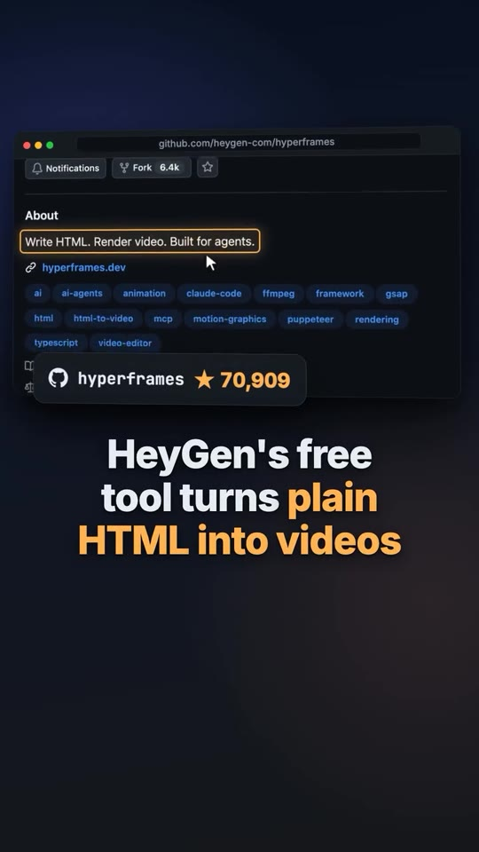
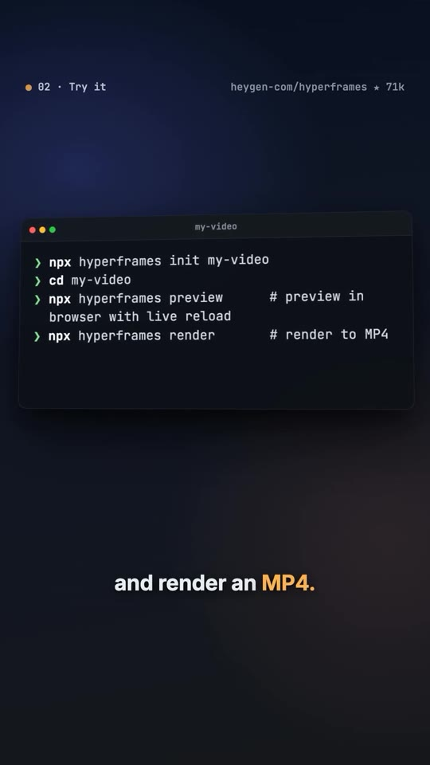
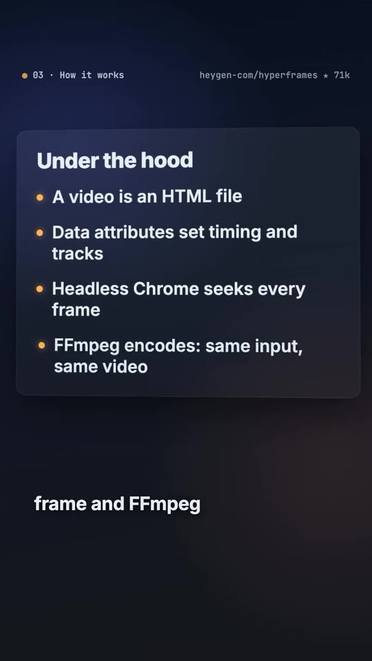
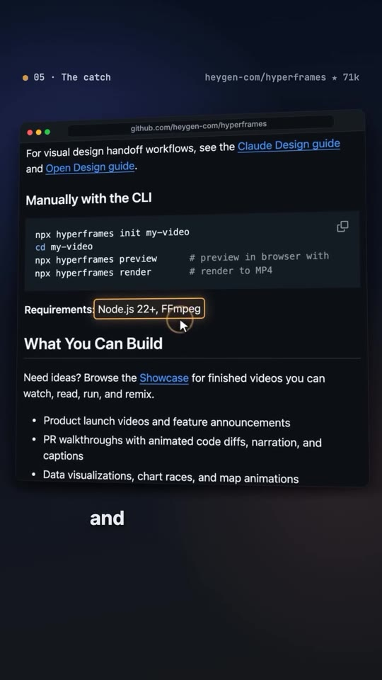

Video-Creation · AI-Explainers
HyperFrames: Open-Source Deterministic Video Generation from HTML, CSS & FFmpeg
A technical teardown of HyperFrames, HeyGen’s open-source framework (~71k GitHub stars) designed for autonomous AI agents (Claude Code, Cursor, Codex) to compile programmatic MP4 videos from standard HTML, CSS, GSAP, and media assets. Explains the underlying headless Chrome seeking and FFmpeg encoding pipeline that delivers 100% deterministic, frame-accurate rendering with zero SaaS API per-render fees.

Framework Architecture & Developer Workflow
- The Deterministic Engine Architecture: Generative AI video models (Runway, Sora, Luma) suffer from typographic warping and non-reproducible motion artifacts. HyperFrames shifts video production into deterministic code compilation: every video is structured as an HTML document where CSS animations, GSAP timelines, and data attributes define frame-level timings and track layers.
-
Under-the-Hood Rendering Pipeline:
Rendering executes locally or inside Docker containers:
- Headless Chrome: Spawns a Chromium instance, steps frame by frame through the DOM timeline, and extracts crisp lossless canvas snapshots.
- FFmpeg Encoding: Encodes sequential frame buffers and audio tracks into standard H.264/AAC MP4 files. The identical input code guarantees identical byte-for-byte output videos.
-
Agent Integration (Claude Code & Codex):
Equip coding agents with the HyperFrames skills package:
npx hyperframes skills updateAgents can autonomously scaffold animations, inspect browser previews via dev servers, and render finished launch videos. -
Manual CLI Quickstart:
Execute the 3-stage lifecycle:
npx hyperframes init my-video cd my-video npx hyperframes preview # Live preview in browser with hot reload npx hyperframes render # Compile final MP4 - Prerequisites & Licensing: Requires Node.js 22+ and FFmpeg installed locally. Fully open source under the Apache 2.0 license with zero per-render fees or cloud credits.
Workflow & Command Diagrams



Verbatim Breakdown
| Time / Source | Spoken Transcript (English) | On-Screen Display / Code |
|---|---|---|
| 00:00 - 00:04 | "HeyGen's free tool turns plain HTML into real videos." | github.com/heygen-com/hyperframes (Public • 70,909 stars • 6.4k forks) About: Write HTML. Render video. Built for agents. Tags: ai-agents, animation, claude-code, ffmpeg, framework, gsap, html, html-to-video, mcp, motion-graphics, puppeteer, rendering |
| 00:05 - 00:09 | "Using Claude Code, Codex or Cursor, just ask your agent to make a video." | 01 • What it does • heygen-com/hyperframes • 71k Quick Start: Using Claude Code, Codex, Cursor, or another coding agent? Run: npx hyperframes skills update once, then ask your agent to make a video.With an AI coding agent: for Claude Code, install versioned plugin: claude plugin marketplace add heygen-com/hyperframesclaude plugin install hyperframes@hyperframes |
| 00:10 - 00:14 | "Launch videos, animated charts, social clips with captions and music." | Skills: /figma: bring Figma into a video — rendered assets, brand tokens, components, storyboard /slideshow: A presentation, pitch deck or interactive deck /remotion-to-hyperframes: Bringing existing video code or footage into HyperFrames (Remotion first; also Motion Canvas, Lottie, Three.js, canvas, other tools) |
| 00:15 - 00:20 | "Or do it yourself: three commands start a project, preview it in your browser, and render an MP4." | 02 • Try it • heygen-com/hyperframes • 71k Terminal (my-video): > npx hyperframes init my-video> cd my-video> npx hyperframes preview # preview in browser with live reload> npx hyperframes render # render to MP4 |
| 00:21 - 00:30 | "Each video is an HTML file with tags for timing. Headless Chrome steps through every frame and FFmpeg encodes them, so the same input gives the same video." | 03 • How it works Under the hood: • A video is an HTML file • Data attributes set timing and tracks • Headless Chrome seeks every frame • FFmpeg encodes: same input, same video |
| 00:31 - 00:38 | "In early April it had 6 stars. A week later, over 5,000. Now, nearly 71,000." | 04 • Traction GitHub stars since March: Mar 8: 6 stars → 6,201 → 69,060 → 70,909 stars |
| 00:39 - 00:46 | "The catch: you need Node 22 and FFmpeg installed. But it's Apache licensed, with no per-render fees." | 05 • The catch Requirements: Node.js 22+, FFmpeg What You Can Build: • Product launch videos and feature announcements • PR walkthroughs with animated code diffs, narration, and captions • Data visualizations, chart races, and map animations • Social videos with kinetic captions, overlays, and music License: Apache-2.0 • No per-render fees |
| 00:47 - 00:52 | "Want your agent making videos? Comment LINK and I'll send it." | heygen-com / hyperframes • 71k TypeScript Comment LINK and I'll reply with it. |
Key Architectural Distinctions
- HyperFrames vs. Remotion: Remotion relies on React component trees, whereas HyperFrames is framework-agnostic HTML/CSS/JS, enabling direct manipulation by AI coding agents via standard DOM APIs and GSAP.
- Determinism: Eliminates video diffusion hallucinations; ideal for exact typography, branding hex codes, and technical UI captures.
- Zero Marginal Cloud Cost: Runs on local CPU/GPU or self-hosted AWS Lambda / Docker clusters without external API subscriptions.
Try This
- Verify your local environment has Node.js 22+ and FFmpeg (
node -v,ffmpeg -version). - Run
npx hyperframes init test-explainer && cd test-explainerto create a boilerplate project. - Launch the development preview with
npx hyperframes previewto observe hot reloading as you tweak CSS transitions. - Compile the production asset via
npx hyperframes render, checking that the generated MP4 matches the exact viewport dimensions.